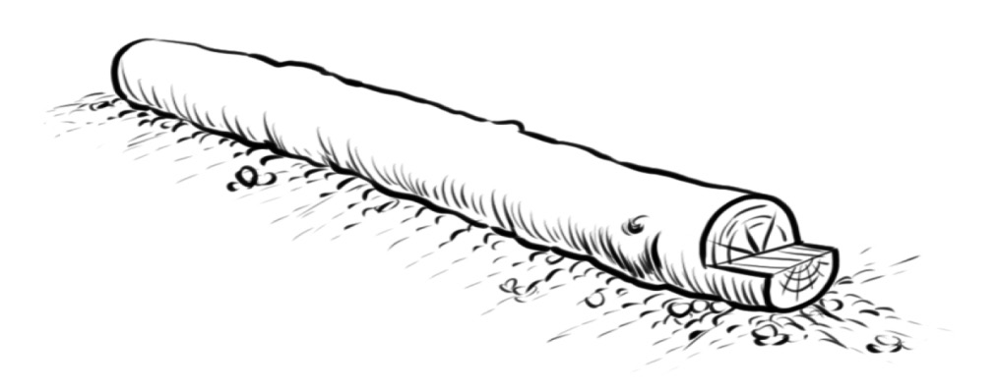

Kielelezo namba 14: Mfano wa picha yenye uelekeo wa wima
Picha zenye uelekeo wa mlalo
Matumizi ya mistari ni muhimu sana katika kuchora picha zenye uelekeo wa mlalo, kwani husaidia kuonesha uelekeo, kina na mpangilio kwenye mchoro. Mfano, mistari katika Kielelezo namba 15 iliyo katika miti inaonesha uelekeo wa mlalo. Tazama mkao wa gogo, uchunguze pia mistari ya ndani ya gogo, na katika sehemu iliyokatwa, utaona uelekeo wa mlalo.

Kielelezo namba 15: Mfano wa picha yenye uelekeo wa mlalo